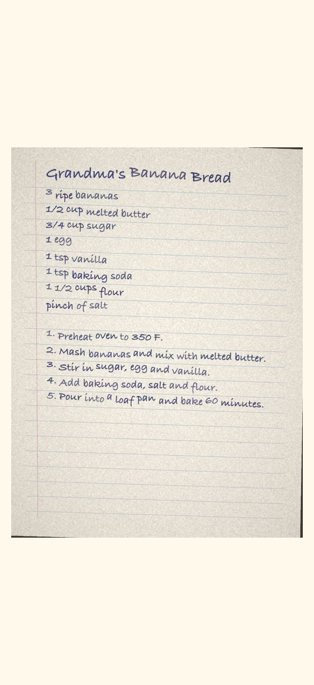
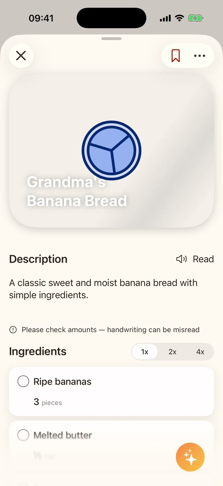
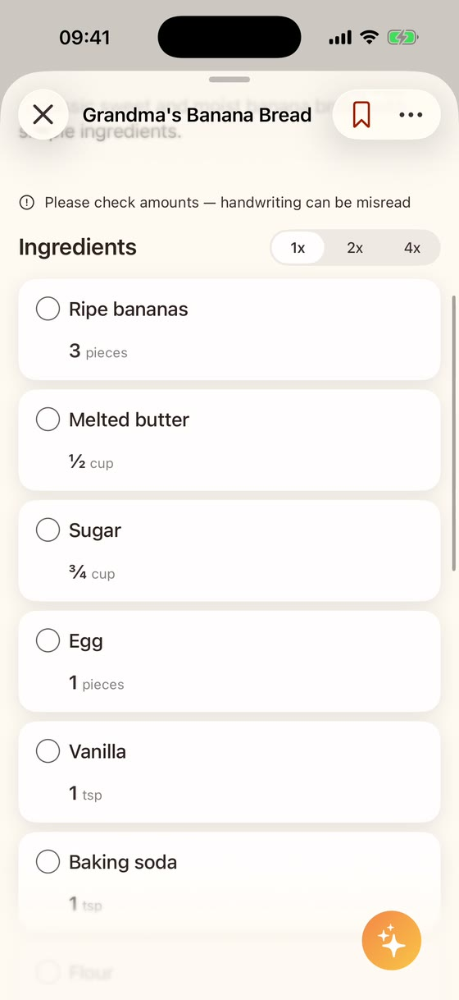

ReciPics
ReciPics
Grandma's recipe cards, a note from a friend, your own kitchen notebook: scan a handwritten recipe by taking a photo, and ReciPics turns the handwriting into a recipe in your cookbook, with ingredients, amounts and steps you can edit. Clear handwriting works best, and you should always check the amounts. The paper stays in the drawer, the recipe is on your iPhone.
View on the App Store


Real screens from the app. The card is a sample we made for testing: a digital image in a handwriting-style font, not a photo of real paper. Real handwriting is harder to read than this.
ReciPics is set up to take the amounts that are written on the card and not to make up missing ones. If no amount is written for an ingredient, it should stay empty, and you can add it yourself. AI can still make mistakes. ReciPics may add short step titles and suggested ingredient alternatives (shown as “alternative”). These are not from the original.
Handwriting can be misread. After a scan, the app shows the hint “Please check amounts — handwriting can be misread”. Compare the recipe with the card before you cook, especially amounts and temperatures.
Clear, flat, well-lit photos work best. Very faint, smudged or tightly written cards are harder to read.
Always check ingredients yourself for allergies or intolerances; ReciPics can misread or miss an ingredient.
Each photo scan uses the app's AI allowance. Without Premium, it is limited.
More ways to save recipes: Scan recipes from cookbooks · Save recipes from Instagram and TikTok · Save recipes from websites
Recipes from family and friends are theirs to share; ask before you pass them on. Use ReciPics for your private cookbook only. To read the photo, the photo and the text recognized on your iPhone are sent to our servers and to our AI provider OpenAI (USA); see the Privacy page.
Get ReciPics on the App StoreFor iPhone with iOS 26 or later.